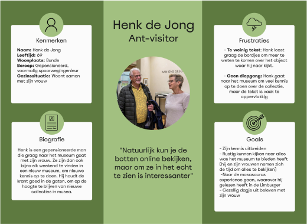
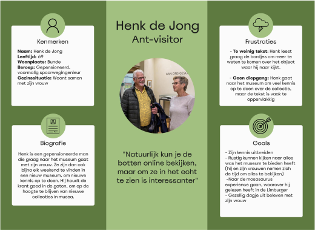

Interactieve museuminstallatie
Mijn rol: interaction design, Prototyping, Testing
Periode : september - november 2024
Opdrachtgever: Natuurhistorisch Museum Maastricht
De opdracht
Aan het begin van mijn tweede jaar om CMD kregen wij de opdracht om een interactieve installatie te maken voor het Natuurhistorisch Museum in Maastricht. Het museum heeft talloze pronkstukken in de vitrines liggen en heeft veel verborgen verhalen. Het was aan ons de taak om die verborgen verhalen te vertellen aan de bezoeker. Deze opdracht heb ik samen met drie van mijn medestudenten gemaakt.
Als groepje mochten wij een van deze verborgen verhalen uitkiezen als thema. Nadat we eenmaal door het museum waren gelopen, was de keuze voor mij makkelijk: de Mosasaurus. De Mosasaurus is een reusachtig, uitgestorven zeereptiel, die zijn naam te danken heeft aan de Maas, waar de eerste fossielen werden gevonden. Ik wist bijna niks over de Mosasaurus, maar het gigantische skelet dat in het museum hing trok meteen mijn aandacht. De Mosasaurus had zijn eigen sectie, waar de vitrines vol lagen met botten van verschillende soorten Mosasaurussen. Helaas was dit voor de bezoeker niet duidelijk en bleef het verhaal van de verschillende soorten mosasaurussen verborgen. Een verhaal dat wij graag wilden vertellen.
Onze aanpak
We ons onderzoek begonnen met literatuur onderzoek over de mosasaurus en gerelateerde projecten. Nadat wij een goed beeld hadden van de mosasaurus, zijn wij naar het Natuurhistorisch Museum geweest om bezoekers te observeren en interviewen. Tevens zijn wij op bezoek geweest bij het Nederlands Mijnmuseum in Heerlen, om te kijken hoe zij interactie in het museum geïmplementeerd. Om alle inzichten samen te brengen hebben een synthese gemaakt door middel van een empathy map en persona’s. Vanuit hier zijn wij gaan kijken naar passende concepten en oplossingsmogelijkheden, die voldoen aan de ontwerpeisen die wij hadden opgesteld. Deze inzichten hebben wij in een posterpresentatie gepresenteerd aan het museum om onze voortgang te laten zien.
 

Het concept
Nadat wij goed beeld hadden van onze doelgroep konden wij aan de slag gaan met het bedenken van een passend concept. Na veel schetsen en ideeën, ontstond Fossil Finders. Fossil Finders is een interactie die gebruiker op speelse wijze kennis laat maken met een aantal bekende mosasaurussoorten. Het idee erachter is dat je als bezoeker in de interactie een aantal botten opgraaft, waar hij of zij informatie krijgt over kenmerken van een mosasaurussoort. Als het hele skelet is opgegraven moet de bezoeker ontdekken welke soort het is, door de kenmerken die zij net te weten zijn gekomen te vergelijken met kenmerken van andere mosasaurussoorten in een spelvorm.
Prototyping en testing
Met een goed concept op zak konden wij een begin maken aan een prototype om te testen. Het prototype was mijn hoofdtaak tijdens dit project. Het prototype heb ik gemaakt in Figma. Ik ben eerst begonnen met een low-fidelity prototype op het gebied van visuals (zie afbeelding hieronder), om te testen of de technische aspecten van ons concept haalbaar waren. Na flink wat sleutelen is mij dat gelukt. We hebben deze versie getest, feedback gekregen en iteraties gemaakt. Deze iteraties heb ik verwerkt in een high-fidelity prototype, nadatde visuals ook klaar waren.
Benieuwd naar ons eindconcept? Bekijk het prototype!